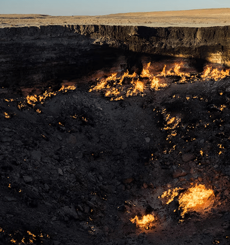
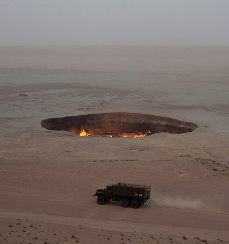

NATIONAL GEOGRAPHIC
This 'Gate to Hell' has burned for decades. Will we ever shut it
SCIENCE
- 
- 
Ten years ago, National Geographic Explorer George Kourounis climbed into the Gate to Hell. The 230-foot-wide, 100-foot-deep pit in north-central Turkmenistan is formally known as the Darvaza Crater (and named after a nearby village), but its nickname describes the phenomenon better: a methane-belching hole ignited decades ago in a remote stretch of the Karakum Desert that’s been burning ever since.
In 2013, Kourounis would be the first person ever to climb inside the flaming crater. After two years of planning, he had only 17 minutes to obtain gas readings and soil samples before being hoisted out again. “That 17 minutes is etched pretty deep into my brain,” he recalls. “It was so much scarier, so much hotter and bigger than I thought.”
That expedition raised awareness of the Darvaza Crater around the world, and widely shared images of the flamboyant conflagration, along with the apocryphal tales of its genesis, have made it a huge draw for tourists to the secretive former Soviet republic in Central Asia. But the country’s authoritarian regime has a more mixed relationship with the crater: Every now and then, it declares that it will snuff out the methane-fueled fires once and for all before deciding, yet again, to leave the Gate to Hell alone.
With vast caches of oil and gas, Turkmenistan is home to myriad industrial zones where methane a potent greenhouse gas seeps into the atmosphere. Earlier this summer, the American and Turkmen governments discussed ways in which they could cooperate to permanently seal these sites perhaps including Darvaza Crater.
But quenching the flames is no trivial task, and anyone hoping to explore that option must first answer three key questions: How did Darvaza Crater come to be? What’s the best way to go about turning it off? And is it even a good idea to try and shut the Gate to Hell?
“It can go wrong,” warns Guillermo Rein, a fire scientist at Imperial College London. “I do worry about the risk of an explosion.”
Soviet shenanigans
Despite its infernal appearance, Darvaza Crater is not inherently bizarre. Also called the “Light of Karakum” in Turkmen, it sits atop the Amu-Darya Basin, a geologic formation packed with an unfathomable amount of oil and natural gas which is predominantly methane. Lots of that methane escapes through the earth’s crust; if it ignites it will burn until either the fuel, the heat source, or the oxygen rich air is removed.
“We shouldn’t be surprised it exists,” says Mark Ireland, an energy geoscientist at Newcastle University.
Usually, this region’s methane is either harnessed by the petroleum industry, or it leaks out, often unnoticed, above ground, or under water. That Darvaza Crater has been burning, unattended, for decades, is peculiar nd it’s almost certain that it began as a Cold War-era industrial accident.
Nobody knows which origin story is most likely, but several tales have similar plot elements: Sometime between the 1960s and 1980s, Soviet engineers possibly petroleum prospectors were drilling in the area when the earth crumbled beneath them, opening a geologic wound that would unleash a methane maelstrom.
Perhaps the engineers lit the methane gas, hoping it would quickly burn away. Maybe someone threw in a cigarette and accidentally set the fires going. Either way, it ignited a seemingly unyielding pyre that emit an array of noxious pollutants but with the nearest village razed in 2004, there are no locals to bother.
The Gate to Hell also generates visitor revenue for a country that’s mostly closed to outsiders. “It’s marketing. It has become [Turkmenistan’s] number one tourist attraction,” says Kourounis.
Comments :
- john Very good
- john Very good
Leave a Reply
Your email address will not be published. Required fields are marked*
Related posts:
-
 $50 million fund to help amplify Black contributions to American history
$50 million fund to help amplify Black contributions to American historyAfrican American historic landmarks have long been forgotten, neglected, and left in the dark. Spaces that have curated Black achievement, activism, and artistry traditionally have not received the same funding as other historic landmarks
View article -
 This U.S. governor was impeached for cracking down on the KKK
This U.S. governor was impeached for cracking down on the KKKA century and a half ago, North Carolina’s Ku Klux Klan was ascendant. Fueled by backlash to Reconstruction, groups of masked men roamed the state, terrorizing and murdering Black citizens and government officials opposed
View article -
 Thousands lost everything in the Tulsa Race Massacre including my family
Thousands lost everything in the Tulsa Race Massacre including my familyWhen I was in elementary school, my grandfather, Theron C. Toole, pulled me aside at his house. He said he needed to talk to me about something important: our family history. He told me about my great-great-great grandfather
View article